Cifrado por Rejilla
El primero en describir este método, sobre 1550, fue Girolamo Cardano(1501-1576) en su obra “De Subtilitat”. Cardano, uno de los eruditos más importantes del Renacimiento, estudió filosofía, astrología, matemáticas y teología. Su descripción del método de rejilla se expone a continuación.
Obtenga dos piezas idénticas de pergamino y corte agujeros en ellos de dimensiones similares al tamaño normal de sus letras, alguno de ellos para albergar siete, tres, ocho o diez, suficiente para contener sobre unas ciento veinte letras en total. Uno de estos pergaminos se da a su corresponsal y el otro lo conserva consigo. Cuando quiera comunicar su secreto escriba lo que quiera, teniendo cuidado en poner una frase solo en cada hoja a través de los agujeros del pergamino, y después debe intentar componer un mensaje que parezca inocente para rellenar los huecos. Tenga cuidado en evitar cualquier sospecha, y preserve la continuidad del asunto en toda la carta. Cuando vuestro amigo la reciba, todo lo que tiene que hacer es cubrir la hoja con el segundo pergamino, y vuestro mensaje secreto aparecerá inmediatamente.
No sabemos el momento exacto en el que el método pasó a utilizarse como método de trasposición puro, pero probablemente fue en el siglo XVIII, siendo más común hasta esa época la utilización de rejillas simples con una función de ocultación del mensaje más esteganográfica que criptográfica. Dentro de las rejillas de trasposición, unas de uso muy común son las denominadas rejillas rotativas o giratorias.
Sobre la rejilla hay que tener en cuenta su formato y la manera en que se inscribe y recupera el texto. Si bien lo usual es que el texto se inscriba en la forma normal, es decir de izquierda a derecha y de arriba abajo, es posible, incluso frecuente, la utilización de formas alternativas de inscripción del mensaje, por columnas, en diagonal, etc., principalmente en las rejillas de caracteres, es decir, en las que todos los orificios corresponden a una letra.
En las rejillas rotativas el número total de aperturas es un cuarto del total de posiciones de la misma. La escritura del mensaje se realiza girando sucesivamente la rejilla 90º y rellenando las aperturas hasta volver a la posición original. Para hacer una rejilla con la propiedad de que al rotar no coincidan dos casillas de mensaje, basta con ir fila a fila escogiendo una serie de posiciones que no hayan sido previamente marcadas, y marcar con una x o cualquier otro símbolo las posiciones que ocuparán al hacer las rotaciones.
El método que presentamos a continuación es una manera muy sencilla de diseñar un tipo de rejillas llamadas rejillas de Fleissner, en honor a su inventor, el criptólogo austriaco Eduard Fleissner von Wostrowitz. Este tipo de rejilla, el mismo que se describe en la obra de Julio Verne “Mathias Sandorf”, tiene un número par de celdas y para su preparación primero debemos dividir la rejilla en cuatro zonas cuadradas con el mismo número de celdas. El siguiente paso consiste en marcar las celdas correspondientes a cada una de las zonas con un número consecutivo, de forma que la orientación de los números de cada zona esté rotada 90º.
Por último se descubren las celdas que interesen de forma que no haya dos celdas descubiertas con el mismo número. Por ejemplo sea la rejilla siguiente ya dividida en cuatro cuartos:
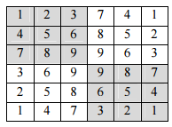
Marcamos los números que queremos descubrir, en nuestro caso los marcamos con un fondo oscuro:
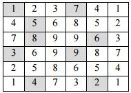
Cifrado
Si queremos cifrar la frase LA VUELTA AL MUNDO EN OCHENTA DIAS empezamos por generar la rejilla poniendo cada letra en una posición y en el caso de no completarse, se rellena con caracteres nulos.
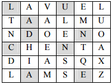
El primer grupo viene dado por las letras LUADNCNAE. Rotando la rejilla obtendríamos:
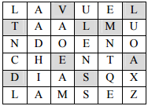
Con lo que el cifrado en este paso sería VLTLMEADS, volvemos a rotar 90º la rejilla y obtenemos el siguiente resultado:
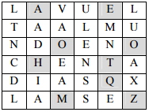
El criptograma sería pues AEOOHTQMZ. Hacemos la última rotación, y obtenemos la última parte del criptograma, AUNEIAXLS tal como muestra la figura siguiente:
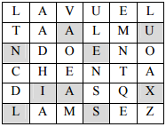
En este caso el criptograma completo sería LUADNCNAE VLTLMEADS AEOOHTQMZ AUNEIAXLS.
Descifrado
Para recomponer el mensaje claro simplemente se pone la rejilla sobre un papel en blanco y se van rellenando los espacios abiertos, de manera que una vez rellenados todos, se da la vuelta 90º a la rejilla y se sigue el proceso hasta haber completado el mensaje.
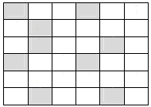
Acomodamos el primer grupo LUADNCNAE:
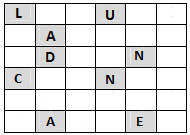
El segundo grupo VLTLMEADS:
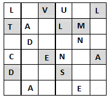
El tercer grupo AEOOHTQMZ:
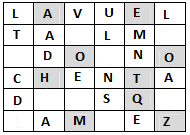
Y para el último grupo AUNEIAXLS:
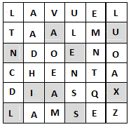
Y ya obtuvimos el mensaje claro: LAVUELTAALMUNDOENOCHENTADIASQZLAMSEZ.